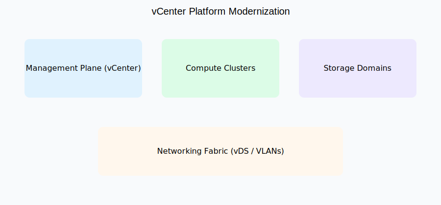

VMware vCenter Platform Modernization
Enterprise-scale virtualization platform modernization focused on
reliability, risk reduction, and operational continuity across
multi-cluster VMware environments.
Architecture Overview

Diagram is sanitized and production-inspired. It illustrates control planes,
compute segmentation, storage domains, and network fabric boundaries without
exposing proprietary configurations or customer environments.
Problem Context
Large VMware environments tend to accumulate operational risk over time
due to organic growth, inconsistent standards, legacy design decisions,
and tooling drift.
This project represents a structured approach to modernizing a vCenter
platform while maintaining uptime, preserving blast-radius boundaries,
and avoiding disruptive “big bang” changes.
Primary Objectives
- Reduce operational risk and configuration drift
- Standardize cluster, network, and storage design patterns
- Improve upgrade, patching, and lifecycle velocity
- Clarify ownership and operational responsibilities
- Prepare the platform for hybrid and cloud-adjacent integrations
Modernization Approach
1. Platform Assessment & Baseline
- Inventory of vCenter instances, clusters, and host profiles
- Network and storage dependency mapping
- Identification of drift, legacy configurations, and risk hotspots
2. Architecture Standardization
- Consistent cluster and resource pool design
- Defined network segmentation using vDS and VLAN boundaries
- Policy-driven storage domain alignment
3. Controlled Execution
- Incremental changes with validation checkpoints
- Isolation of high-risk workloads
- Rollback strategies for each major change
4. Operational Hardening
- Improved monitoring and alerting coverage
- Documented runbooks and ownership models
- Reduced manual intervention through automation
Outcomes & Impact
- Improved platform stability and predictability
- Reduced incident frequency related to configuration issues
- Faster upgrade and maintenance windows
- Clearer separation between management, compute, storage, and network planes
- Stronger foundation for future platform evolution
Skills & Concepts Demonstrated
VMware vCenter
ESXi
vDS / Networking
Enterprise Storage
Platform Modernization
Risk Management
Operational Excellence
This project is a reference architecture and narrative summary based on
real-world enterprise experience. All diagrams, configurations, and
descriptions are intentionally generalized to avoid disclosure of
proprietary systems, customer data, or employer-specific implementations.
← Back to Projects